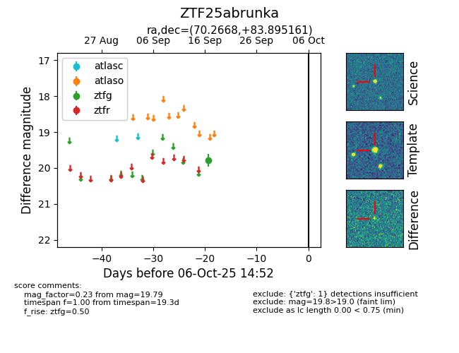

FINK: ZTF25abrunka
Lasair: ZTF25abrunka
ALeRCE: ZTF25abrunka
ZTF25abrunka (ztf,fink)
equatorial (ra, dec) = (70.2668,+83.89516)
galactic (l, b) = (128.5487,+23.72920)

last ztfg=19.79
1 ztfg detections